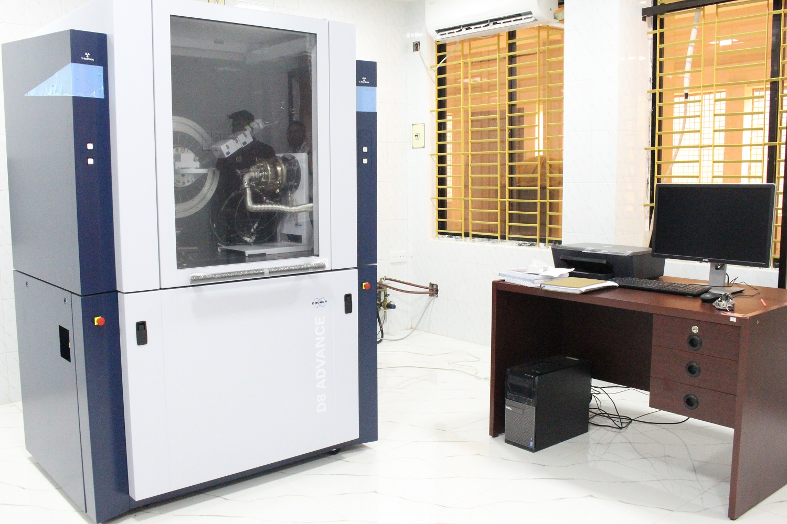
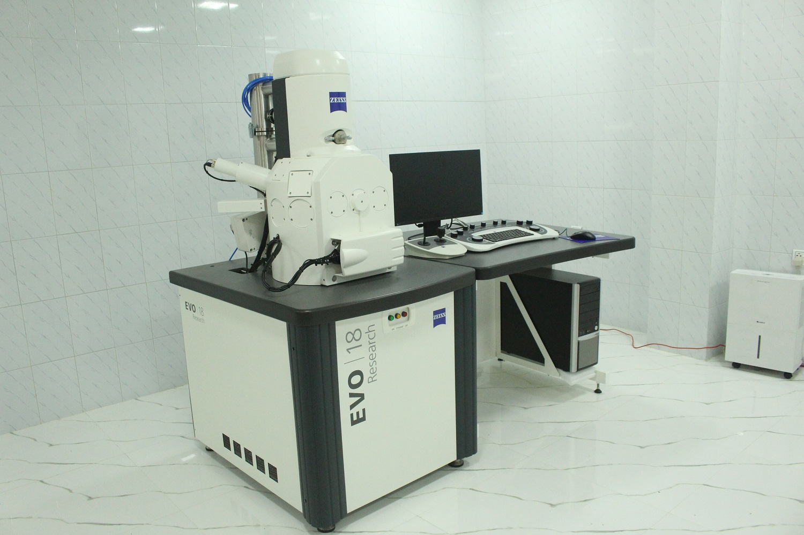
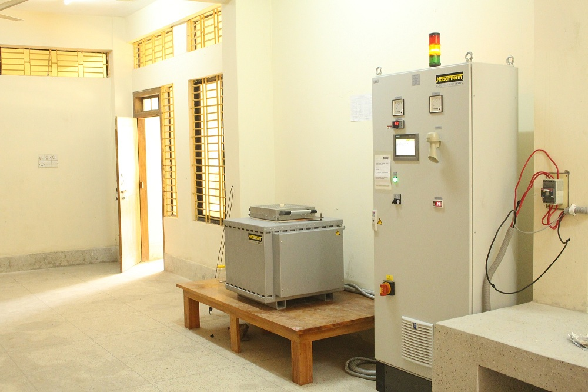
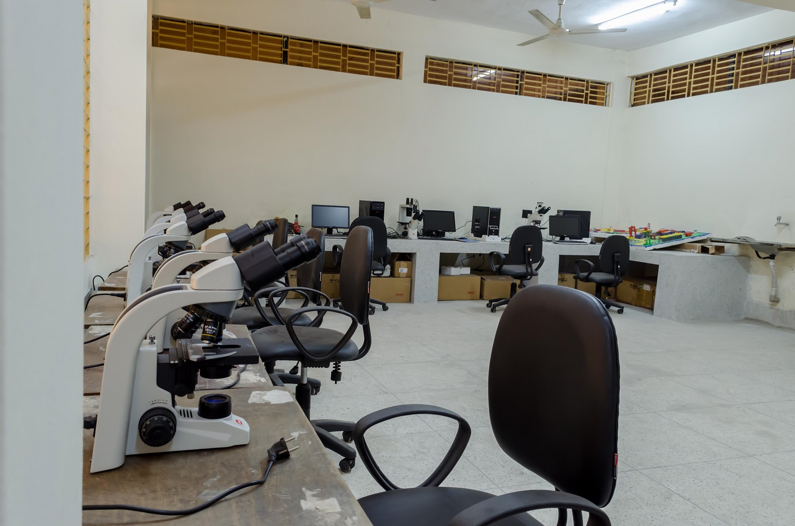

X-Ray Diffraction Analysis
Worked with XRD-based structural analysis to identify crystalline phases, phase evolution, peak shifting, crystallinity, and structure-property relationships in ceramic and oxide materials. I used XRD results to support interpretation of doped BiFeO₃, ZnO-based thin films, and other functional material systems.
XRD · Phase Identification · Crystal Structure · Rietveld Refinement
SEM & Microstructural Evaluation
Developed practical understanding of microstructural features including grain morphology, surface texture, particle distribution, porosity, and defect-related features. This helped me connect processing conditions with material performance and research outcomes.
SEM · Morphology · Grain Structure · Defect Analysis
Ceramic Processing & Heat Treatment
Gained experience with ceramic processing principles including powder preparation, calcination, sintering, and heat-treatment-dependent phase formation. This background supports my research on functional ceramic systems and industrial ceramic process optimization.
Sintering · Calcination · Furnace Operation · Ceramic Processing
Optical Microscopy & Sample Observation
Used microscopy-based evaluation to observe sample surface quality, visible defects, polishing condition, microstructural features, and material uniformity. This experience is useful for both academic research and industrial quality assessment.
Optical Microscopy · Surface Quality · Sample Inspection
Thermal Analysis & Dilatometry
Applied thermal analysis and dilatometer-based interpretation to understand temperature-dependent dimensional changes, firing behavior, and ceramic processing parameters. This experience is directly connected to my current R&D work in ceramic manufacturing.
Thermal Analysis · Dilatometer · Firing Behavior · Process Optimization
XRF-Based Chemical Composition Analysis
Worked with XRF-based chemical analysis concepts for raw material evaluation, formulation control, and ceramic quality assurance. This supports decision-making in product development, defect investigation, and process improvement.
XRF · Chemical Composition · Raw Material Evaluation · Quality Control